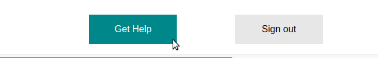
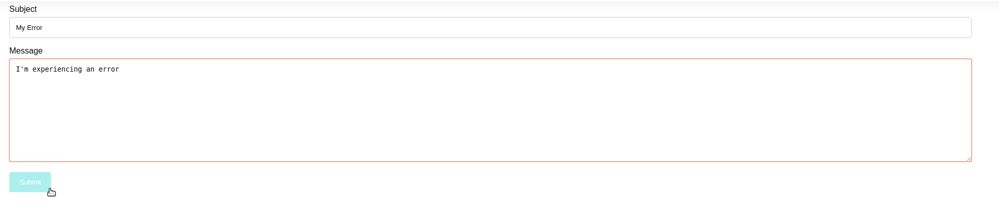

Users can report any problems, issues or errors they experience directly to the scientists at TGen North.
In order to navigate to the contact page, users can click the "Get Help" button, located at the top right of every page.
On the contact page, users can fill out their message. Users can include the subject of the message and the message itself. Once done, users can hit the submit button to send their message, along with a saved state of the website, to TGen North.